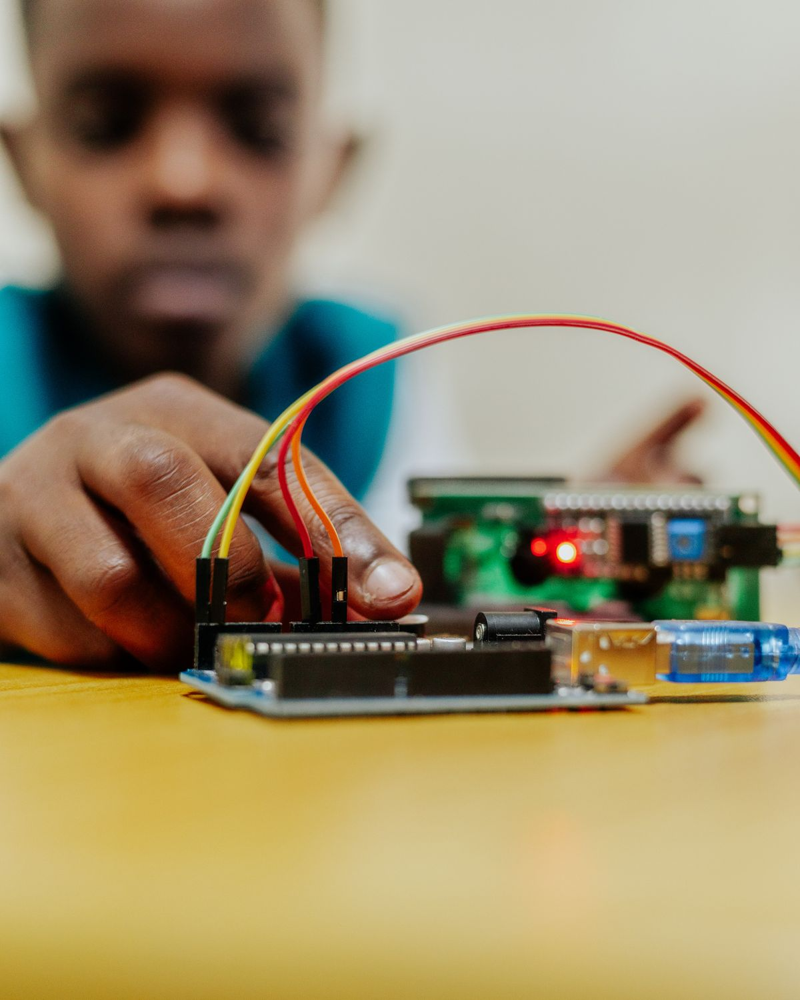

Maker skills
Circuit literacy, coding fluency, mechanical reasoning and the ability to debug a build without giving up.
We do not count footfall and call it impact. We track the skills students can demonstrate, the confidence teachers report and the work that survives after the term ends.
A successful lab shows up in student capability, classroom behaviour and the school's ability to sustain the programme. We report on all three.
Circuit literacy, coding fluency, mechanical reasoning and the ability to debug a build without giving up.
Persistence, collaboration, explanation and iteration — the habits that transfer to every other subject.
Teacher confidence, lab attendance, showcase participation and the number of projects that get reused next term.
These are programme targets, not retrospective claims. We review them at the end of each term and publish the actuals in the school's progress report.
Progress shows up as a working circuit, a rover that survives a debug session and a student who can explain both. These are the moments the rubric is built around.



No 40-page PDF nobody reads. We send a short, visual report each term with the numbers, the student work and the next steps.
Attendance, skills progress, safety notes and a plain-language summary for school leaders and parents.
Eight observable skills scored from “emerging” to “leading”, with evidence from the build log and demo.
Photos, project films and a short student reflection for every team — useful for open days and admissions.
We do not wait until the showcase to check whether the lab is working. These are the four checkpoints built into every term.
Students try a simple build and a short skills task. Teachers note confidence, teamwork and prior exposure.
Every pair completes a circuit and explains it. We check tool safety and build-log habits.
Teams troubleshoot a fault with limited help. This is the checkpoint that predicts whether the lab will sustain.
Students present, teachers score the rubric and we agree next term's targets together.
It shows up in small shifts: a student who stops asking for the answer, a teacher who asks a better question, a team that breaks something and immediately reaches for the build log.
The quiet student who suddenly explains a circuit to a visitor — unprompted, in their own words.
The team that breaks their robot and immediately reaches for the build log instead of the teacher.
The teacher who stops delivering content and starts asking better questions. That is the handover moment.
We will send a blank reporting template and a sample term summary so your leadership team can see exactly what you will receive.